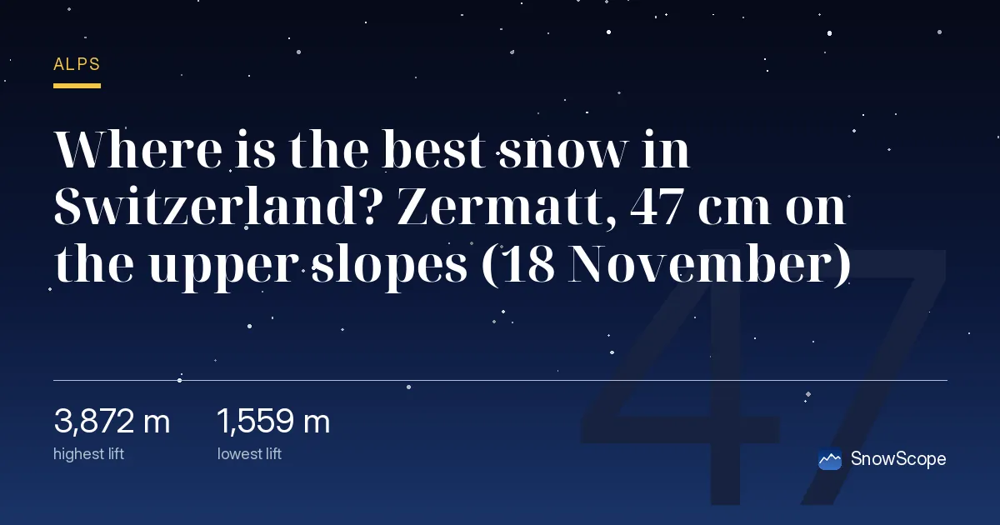

Where is the best snow in Switzerland? Zermatt, 47 cm on the upper slopes (18 November)
On 18 November, all 14 Swiss resorts tracked by SnowScope have snow on their upper slopes. Zermatt is the deepest at 47 cm, with Verbier and Aletsch Arena close behind. The next three days will bring significant new snow to most areas.
See the live snow forecast for Zermatt in the SnowScope appSnow depth, powder alerts and the 3D map, free.
The snow map on 18 November
Half of Switzerland's 14 resorts have 28 cm or more on the upper slopes; half have less. The median depth across the country is 28 cm. At the top of the range, Zermatt sits at 47 cm, where the highest lift reaches 3,872 m. The air is cold enough that snow lies on rocks and thin patches without melting back.
The second tier includes Verbier (36 cm), Aletsch Arena (34 cm), Saas Fee (33 cm) and Crans-Montana (32 cm). Below 30 cm, resorts like Engelberg-Titlis (28 cm), Mürren/Schilthorn (28 cm) and Andermatt (26 cm) have enough for safe runs on groomed slopes, but rocks may catch edges on steep terrain.
| Resort | Snow depth | New snow, 72 h | Coming, next days | Top |
|---|---|---|---|---|
| Zermatt | 47 cm | 61 cm | 77 cm | 3,872 m |
| Verbier | 36 cm | 64 cm | 81 cm | 3,304 m |
| Aletsch Arena | 34 cm | 37 cm | 41 cm | 2,869 m |
| Saas Fee | 33 cm | 43 cm | 49 cm | 3,556 m |
| Crans-Montana | 32 cm | 53 cm | 68 cm | 2,872 m |
| Engelberg-Titlis | 28 cm | 30 cm | 45 cm | 3,040 m |

What fell in the past three days
The three days leading up to 18 November brought the heaviest snow to Verbier (64 cm), Zermatt (61 cm) and Crans-Montana (53 cm). These numbers show which slopes caught the most of the recent storms. Verbier's height—its top lift sits at 3,304 m—means it picked up more moisture as air rose and cooled over the Pennine Alps.
Lower resorts like Andermatt received only 26 cm in the same period, a sign that the heaviest falls stayed on the higher ranges to the south and east.
What the forecast shows by 21 November
SnowScope forecasts that by 21 November, Verbier will gain 81 cm more, Zermatt 77 cm and Crans-Montana 68 cm. These are the largest additions across the country. If the forecast holds, Zermatt will reach a substantial base for mid-November, and Verbier may overtake it on fresh snow alone.
Even the lower resorts will see gains. Andermatt is forecast to add 34 cm by 21 November, more than doubling its current depth. These numbers assume the weather pattern holds and the storms arrive on schedule.
Planning a short trip: the case for Zermatt
If you have two or three days to ski before 21 November, Zermatt offers the best combination right now. It has the deepest snow (47 cm) and the highest lifts in the country. By the end of your trip, 77 cm more is forecast, so you will ski into significantly better conditions.
The upper slopes at Zermatt stay cold and retain snow well because of the altitude and the glacier. Spend your first day on the high runs to enjoy the depth before afternoon sun softens the surface; on the second day, the new snow will refresh the lower pistes. Verbier is also an excellent choice if you want to chase the freshest snow, since it has already picked up 64 cm of new powder in the past 72 hours.
Off-piste considerations
With up to 64 cm of fresh snow across the top resorts, the off-piste will be soft and appealing for the next 24 to 48 hours. However, the base below that new layer is still thin (47 cm at the deepest resort). Rocks, stumps and terrain traps lie close beneath, especially on steep slopes and in gullies.
Before leaving the groomed slopes, check the local avalanche bulletin for each area. Stick to terrain you know well and that you have skied before in similar conditions. Early morning is safest: the snow sets during the night, and the first tracks will be the softest and most forgiving.
Getting there and what to pack
Roads to the high resorts may be icy on the approach. Winter tyres or chains are essential for the last kilometres to Zermatt, Saas Fee and Verbier. Check local road conditions before you leave, especially if you are driving at dawn or in the late afternoon when temperatures drop.
Bring layers: the air temperature at 3,872 m in November can drop to -10°C or colder. A windproof jacket, thermal base layers and a good neck warmer make the difference between a comfortable day and a cold one. Sunscreen and good sunglasses are also vital, since the high snow surface reflects intense UV.
Tips for skiers
- Start before 8 am: the first runs off the groomers will have the softest snow after a cold night and before afternoon sun reaches the slopes.
- Zermatt and Verbier are your best bets for depth and fresh powder combined; choose based on travel time and accommodation cost.
- Winter tyres or chains are mandatory for the final climbs to high resorts; check regional road bulletins before departure.
- Off-piste only after reading the official avalanche bulletin for your area and your resort. Fresh snow on a thin base means rocks and terrain traps are close.
- Pack extra layers and high-SPF sunscreen: the altitude and reflection from new snow intensify both cold and UV exposure.
About these numbers
Resort snow depths are the deepest snow on the resort's upper slopes on the date shown; they are estimates for an area, not a measurement at one point. Forecasts can change. Always read the official avalanche bulletin before going off-piste.
Cite this report
For research, teaching or the press: the numbers and charts are free to reuse under CC BY 4.0 with this citation.
SnowScope (2026), Where is the best snow in Switzerland? Zermatt, 47 cm on the upper slopes (18 November), https://snowscope.app/blog/en/2026/11/schneehoehen-schweiz-18-november-2026.html, accessed 2026-11-18
SnowScope (Atlas Labs). (2026, November 18). Where is the best snow in Switzerland? Zermatt, 47 cm on the upper slopes (18 November). SnowScope snow reports. https://snowscope.app/blog/en/2026/11/schneehoehen-schweiz-18-november-2026.html
BibTeX
@misc{snowscope2026schneehoehenschweiz18nov,
author = {{SnowScope (Atlas Labs)}},
title = {Where is the best snow in Switzerland? Zermatt, 47 cm on the upper slopes (18 November)},
year = {2026},
month = nov,
howpublished = {\url{https://snowscope.app/blog/en/2026/11/schneehoehen-schweiz-18-november-2026.html}},
note = {Published 2026-11-18 12:04 UTC; accessed 2026-11-18}
}· CC BY 4.0 · Methods, data and tools →
Zermatt: snow and temperature by height, this winter vs last (tools) →
Follow Zermatt
Free: a message when fresh snow is coming, and the forecast every morning.
More snow reports

Saas-Fee gets 22 cm on upper slopes next week, with Thursday 26 November the heaviest day. Forecast from 16 November 2026.

Laax forecast 23–29 Nov: 21 cm at the top, 17 cm mid-mountain, 6 cm at base. Thursday 26 is the heaviest day.

Engelberg snow forecast for 23–29 November 2026: 22 cm at the top (2–42 cm), 7 cm at the base, snowiest day Thursday 26 November, with neighbours compared.